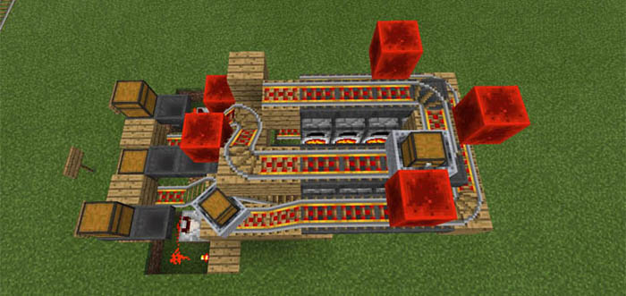
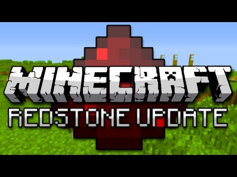

What is Redstone?
Welcome to Redstone
Redstone is an incredible substance that will open up the immense possibilities of Minecraft. It will enhance your gameplay by connecting and controling the blocks that make up your world. With Redstone you are in control, you can create whatever you want for whatever reason with knowledge.
History of Redstone
When did It all Start?
Redstone dust and torches were first introdused in Alpha. Repeaters were introduced in the offcial Redstone release Alpha 1.3.1, when it also became possible to obtain Redstone by trading with villagers. Witches, who sometimes drop Redstone, were introduced in Alpha 1.4.2, followed by pistons in Alpha 1.7. Version 1.5 (AKA 'The Redstone Update') was released in March 2013.